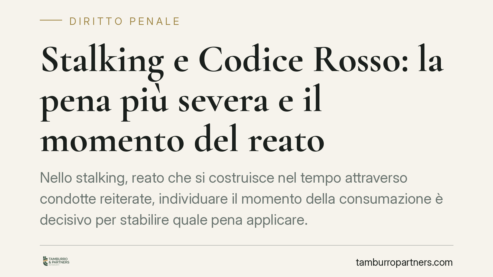

Stalking e Codice Rosso: la pena più severa e il momento del reato
Nello stalking, reato che si costruisce nel tempo attraverso condotte reiterate, individuare il momento della consumazione è decisivo per stabilire quale pena applicare. La Cassazione ha ribadito un principio consolidato: se anche un solo episodio si colloca dopo l'entrata in vigore del Codice Rosso, scatta la cornice sanzionatoria più severa, senza ledere il favor rei. Un chiarimento con ricadute concrete.

Il caso e il principio
Lo stalking, previsto dall'art. 612 bis del codice penale, è un reato cosiddetto abituale: non si perfeziona con un singolo atto, ma richiede una pluralità di condotte reiterate (minacce, molestie, pedinamenti) che generano nella vittima un perdurante stato di ansia, un fondato timore per l'incolumità o un'alterazione delle abitudini di vita.
Questa natura abituale ha una conseguenza tecnica precisa: il reato si considera consumato con l'ultimo atto della sequenza persecutoria. È quel momento, e non il primo episodio, a fissare il *tempus commissi delicti*, cioè il tempo in cui il reato si intende commesso ai fini della legge applicabile.
La Corte di Cassazione, in una recente pronuncia, ha applicato questo criterio al rapporto tra stalking e Codice Rosso (Legge 19 luglio 2019, n. 69, in vigore dal 9 agosto 2019), che ha inasprito le pene per i reati di violenza domestica e di genere, tra cui proprio l'art. 612 bis.
Inquadramento normativo
Il nodo è il principio del favor rei e il divieto di irretroattività della norma penale sfavorevole, sancito dall'art. 2 del codice penale sulla successione di leggi penali nel tempo. In linea generale, nessuno può essere punito con una pena più grave di quella prevista al momento del fatto.
Il punto è stabilire *quando* il fatto si è verificato. Trattandosi di reato abituale, la condotta si unifica attorno all'ultimo atto: se la sequenza persecutoria prosegue oltre il 9 agosto 2019, l'intero reato si considera commesso sotto la vigenza del Codice Rosso. Non vi è quindi applicazione retroattiva di una norma più severa, ma semplice applicazione della legge vigente al momento della consumazione.
Questo orientamento non nasce con la pronuncia in esame. La giurisprudenza, anche a Sezioni Unite, ha da tempo affermato che per i reati abituali e permanenti il regime sanzionatorio applicabile è quello vigente al momento in cui la condotta cessa, quando essa prosegue sotto la nuova disciplina.
Implicazioni pratiche
Per chi è coinvolto in un procedimento per stalking, la distinzione ha peso concreto.
Occorre tenere distinti due piani. Il primo è la qualificazione del fatto: la condotta resta sempre stalking ai sensi dell'art. 612 bis. Il secondo è l'inasprimento della pena: la cornice edittale più severa introdotta dal Codice Rosso si applica se la condotta persecutoria è proseguita dopo il 9 agosto 2019.
Ne deriva che la data del primo episodio è irrilevante ai fini del trattamento sanzionatorio. Ciò che conta è la collocazione temporale dell'ultimo atto. Anche condotte iniziate prima della riforma possono rientrare nella disciplina più gravosa se la persecuzione è continuata.
Per la difesa diventa quindi centrale la ricostruzione cronologica di ogni singolo episodio contestato: individuare con precisione date, natura e continuità delle condotte può incidere in modo decisivo sulla pena applicabile.
Cosa fare in concreto
- Ricostruisci la cronologia completa degli episodi contestati, con date certe e documentazione a supporto (messaggi, segnalazioni, denunce): è il dato su cui si gioca il regime sanzionatorio.
- Verifica la collocazione dell'ultimo atto rispetto al 9 agosto 2019: è questo il momento che determina la legge applicabile.
- Distingui qualificazione e pena: contestare la gravità del trattamento non significa negare la natura del fatto; sono profili da impostare separatamente.
- Valuta la contestazione dei singoli episodi collocati dopo la riforma, perché la loro esclusione può incidere sul regime sanzionatorio applicabile.
- Richiedi una verifica tecnica degli estremi giurisprudenziali prima di fondare una strategia su una singola pronuncia: è opportuno controllare numero, sezione e data di deposito della sentenza di riferimento.
Un approccio prudente
In una materia in cui la collocazione temporale di un episodio può spostare in modo sensibile la pena, è opportuno un esame rigoroso e anticipato del materiale probatorio, senza affidarsi a ricostruzioni sommarie. La difesa efficace, qui, nasce dalla precisione dei dati.
Contributo informativo a cura di Tamburro & Partners - Avv. Giuseppe Tamburro. Non costituisce parere legale.
Ogni condominio ha una storia a sé.
Se gestisci un'amministrazione e vuoi un confronto su una specifica questione condominiale, scrivi allo studio. Ti rispondiamo entro un giorno lavorativo.